Welcome to Week 10
Mechanical design & machine design
Hey! now we will learn about Mechanical design and machine design, for this week we have the following group and individual assignments:
Mechanical Design (part 1 of 2)
- Group assignment:
- Individual assignment:
o Design a machine that includes mechanism + actuation + automation + application.
o Build the mechanical parts and operate it manually.
o Document the group project.
o Document your individual contribution
Machine Design (part 2 of 2)
- Group assignment:
- Individual assignment:
o Actuate and automate your machine
o o Document the group project
o Document your individual contribution.
We met as a team to be able to define what machine we would develop. Due to the mining impact in the city of Arequipa, we opted for a robotic arm capable of innovating mining maintenance, in coating and welding of mantles of a mining crusher.
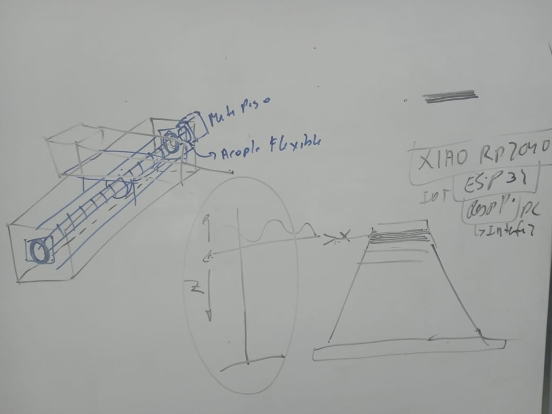Here we can see the first sketch of the idea we had, the complete project you can review here: (Link: https://fabacademy.org/2024/labs/ucontinental/Group-Assignments.html), now join me to develop the mechanical part of this project.
First let's analyze the work that will be carried out, which is welding and coating, the movement it should have will be on an inclined base, so the end effector should have rotational mobility, I will take the following image as a reference, and the part of my colleague Alcides Rios who is in charge from the conceptual part.
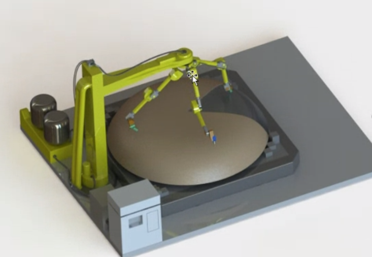From the conceptual design I began to make the solids in the INVENTOR.
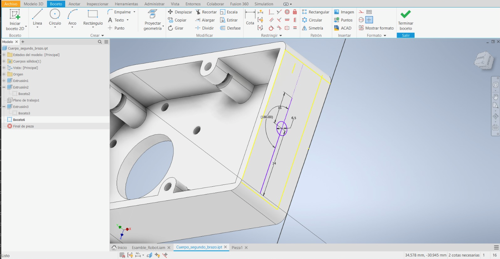 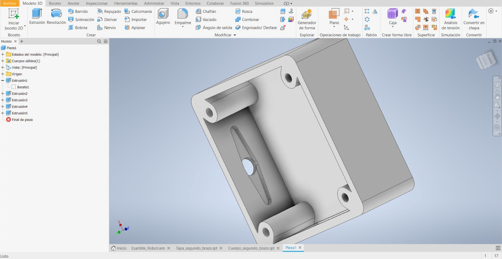After designing each piece, we begin with the assembly of each piece until we achieve the final arm.
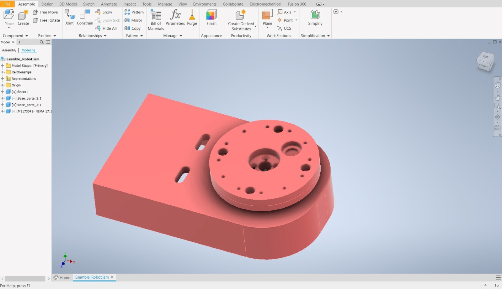The base will be rotating and will have 4 rods that will support the vertical travel like the endless screw.
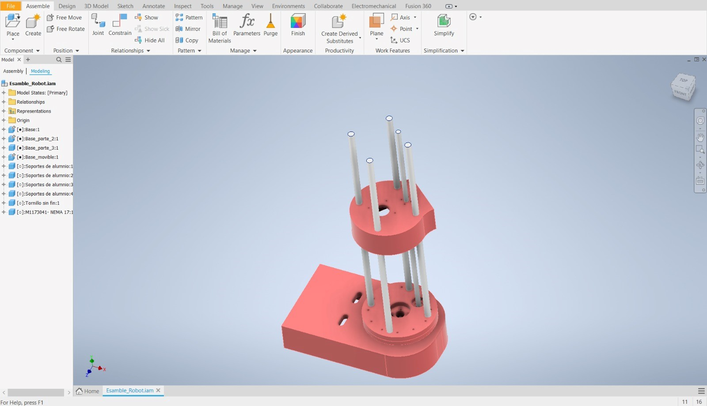 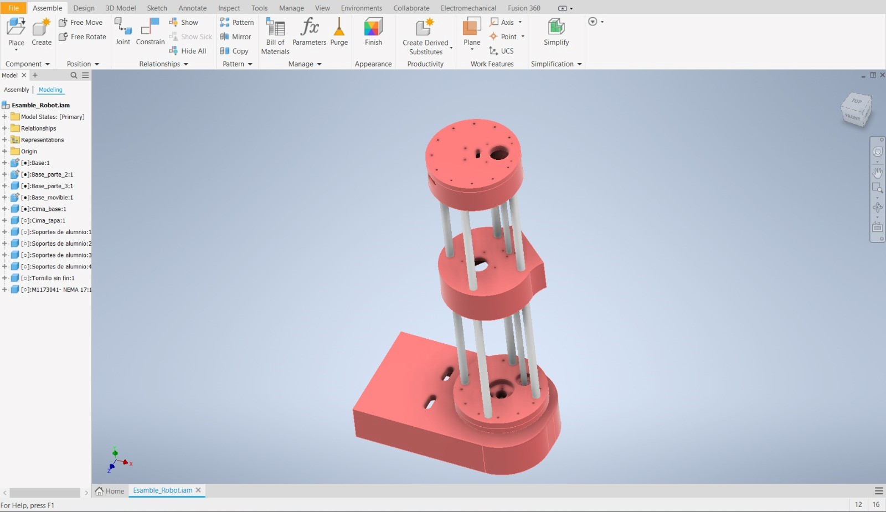On the central arm there will be a pulley system for the rotary movement of the second arm
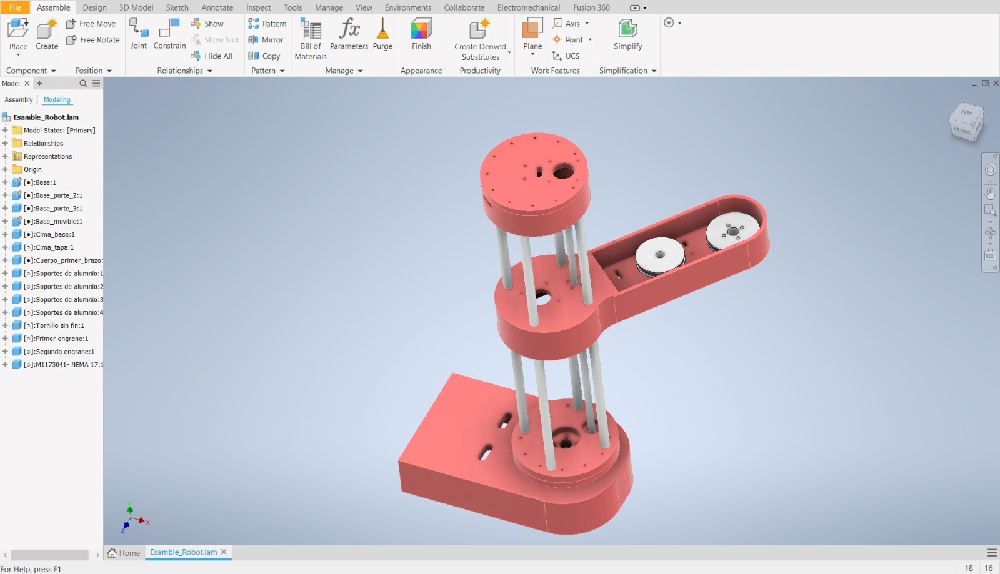and finally the end effector which will have a rotary movement for the various angles of inclination
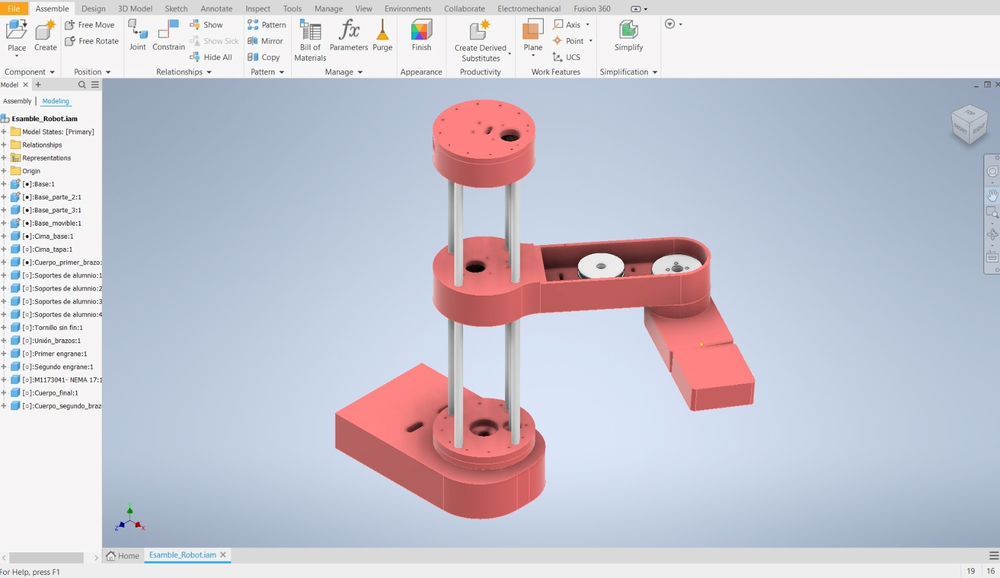Well now let's be clear about the dimensions of the robotic arm since this will help us to have the values of L1, L2 and L3, which will be fundamental for the direct and inverse kinematic analysis, which will be used for the control system.
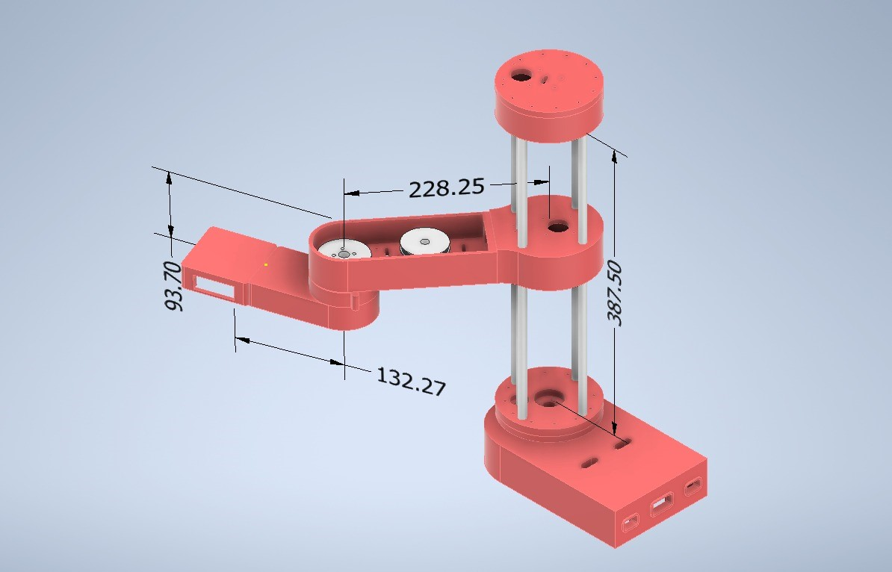Now let's carry out your kinematic analyses, taking into account that it will be a RPRR, revolutionary, prismatic, revolutionary, revolutionary robotic arm.
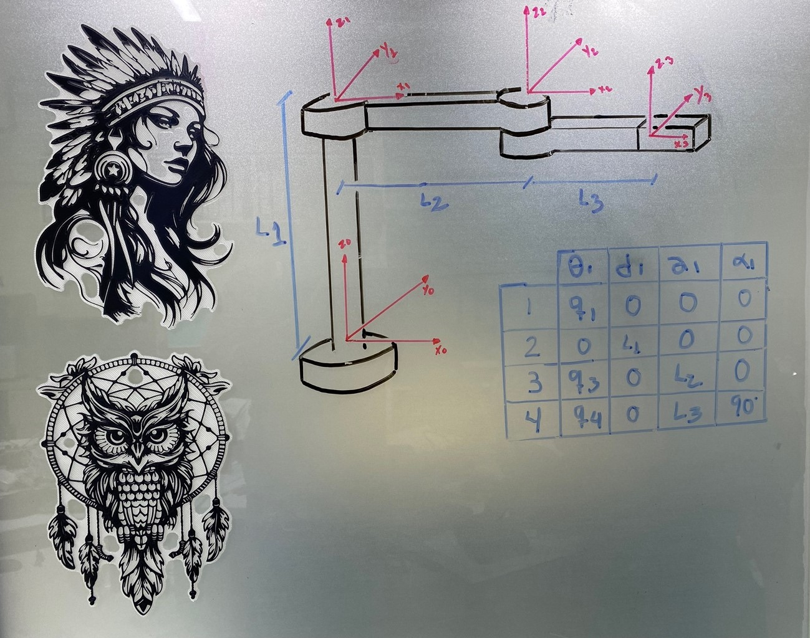Once we have the homogeneous transformation matrix, we multiply to obtain the matrix of each joint.
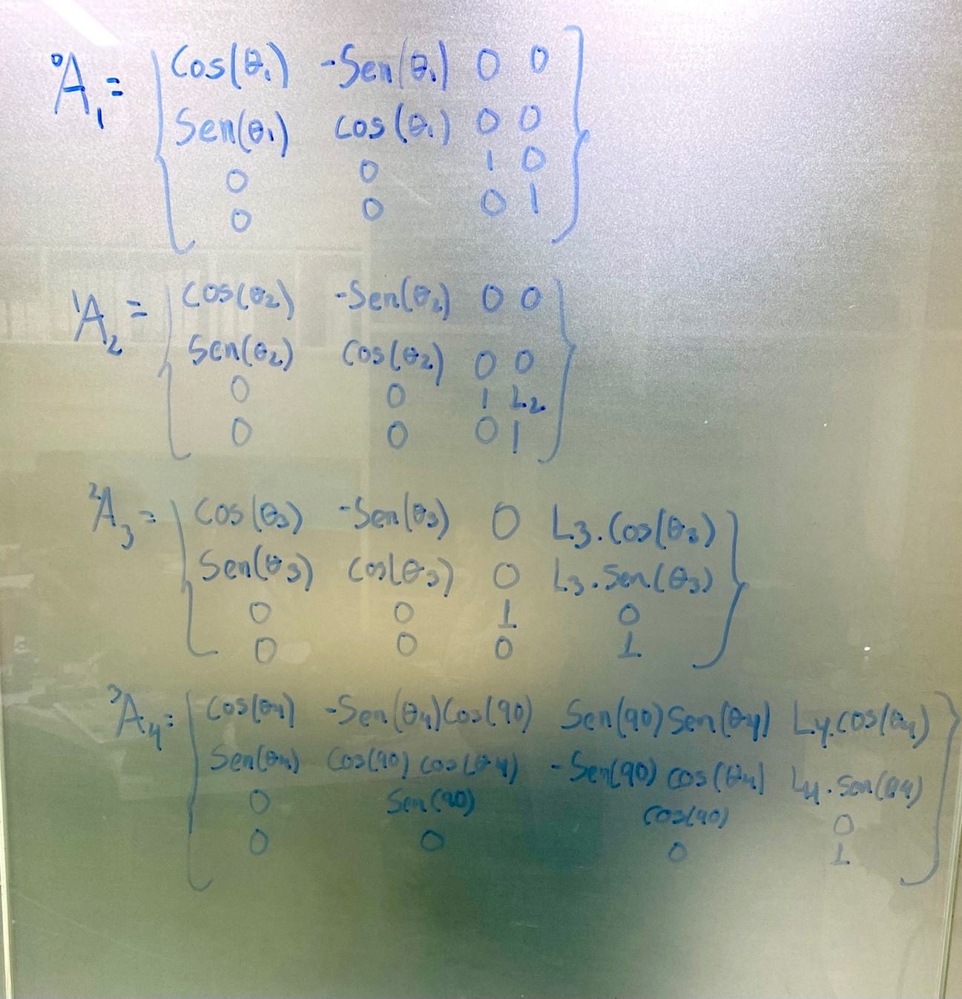We multiply all the joints to obtain the transformation matrix from the first to the last coordinate system.
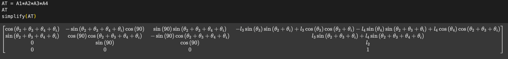Below is the matrix obtained for a configuration in which all joint coordinates have a null value.
This process is used to establish a homogeneous transformation matrix that describes the position and orientation of a reference system with respect to the previous one.
Well, now let's do some analysis of the mechanical design of the robot, let's start by doing a movement test of each joint.
Then we will do a resistance test with a 1kg weight on the surface of each joint, taking into account that it is an approximate value of the weight of the end effector.
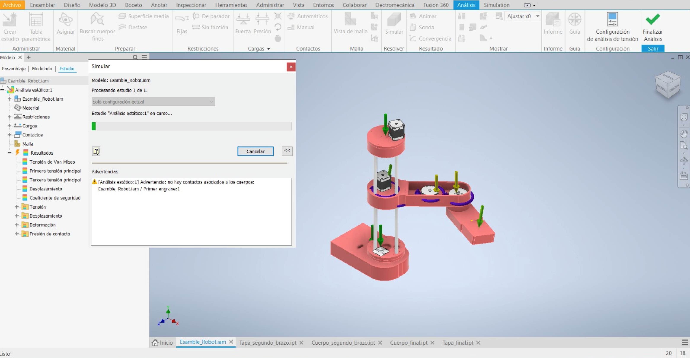As we can see, there is no considerable deformation or displacement due to weight within the joints.
We already have the parts ready and the necessary calculations to be able to start printing and building. It is worth mentioning that the analyzes were contemplated with ABS as manufacturing material.
The digital manufacturing files can be found here, and remember that you can see the entire project on the Fablab UC laboratory page
See you next Week.